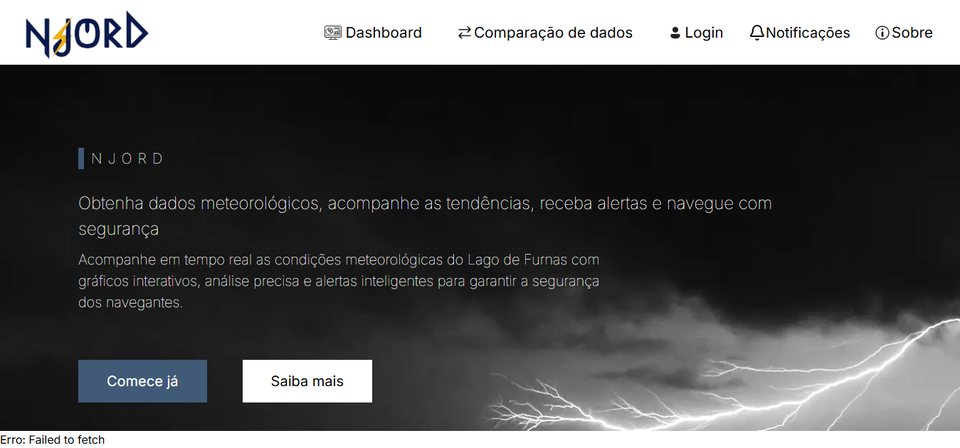

Acadêmico
6DSM · 2º Sem. 2026
Njord
Aplicação desenvolvida para o projeto LabWind (CNPq), para monitorar em tempo real as condições do Lago de Furnas a partir de dados coletados por sensores, gerando gráficos, acompanhamento do nível da água e alertas em situações de alteração significativa.
Contribuição pessoal: desenvolvimento do frontend em React, consumo da API de dados dos sensores e construção dos painéis de visualização e alertas.